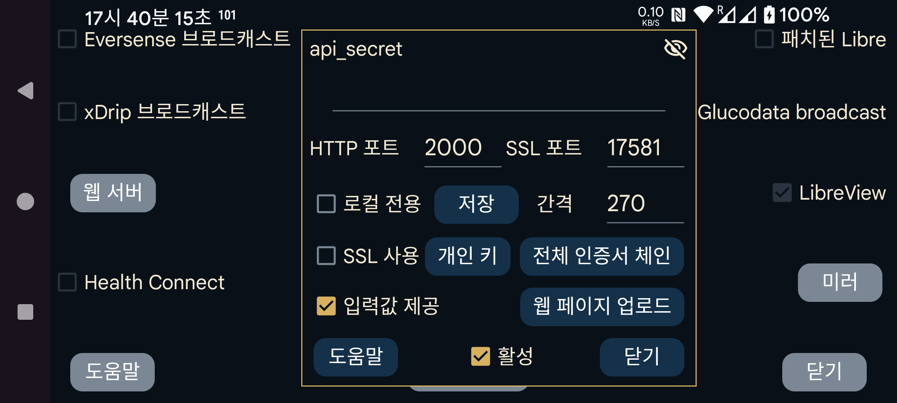

ar be de es fr hi it ja ko nl pl ru sv tr uk uz zh en
Juggluco에는 다른 앱이 Juggluco에서 혈당 값을 받을 수 있는 웹 서버가 내장되어 있습니다. xDrip 워치와 일부 Nightscout 앱에서 사용할 수 있습니다.
xDrip 웹 서버용으로 만들어진 앱은 비교적 쉽게 사용할 수 있습니다. 활성만 선택하면 됩니다. 그러면 127.0.0.1의 포트 17580에서 혈당을 받을 수 있습니다. Nightscout 서버 URL: http://127.0.0.1:17580
일부 Nightscout follower도 사용할 수 있습니다. xDrip, Diabox, Windows Floating Glucose 앱과 Windows, Linux 및 macOS 위젯(Owlet)은 "로컬 전용"을 선택하지 않은 경우 http로 사용할 수 있습니다. macOS의 Nightscout Menu Bar, Gluco Status 및 Gluco Tracker(모두 Apple Store)도 마찬가지입니다. 다음 앱들도 http만 있으면 됩니다: Nightscouter 및 LoopFollow (iOS)와 Nightguard (iOS 및 watchOS).
인터넷을 통해 Juggluco에 접근하려면 모뎀에서 포트를 포워딩해야 합니다. 참조:
다른 Nightscout follower는 https만 사용하며, 이를 위해서는 Juggluco에 Juggluco 접근에 사용하는 도메인 이름에 대해 인증된 SSL 키가 있어야 합니다. 외부 IP에 연결된 호스트 이름이 있으면 다음을 통해 무료 인증서를 받을 수 있습니다: Certbot외부 IP에 호스트 이름이 없으면 사용할 수 없습니다. 무료 도메인 이름은 다음에서 받을 수 있습니다: https://www.freenom.com. 저도 사용해 보았지만 몇 주 뒤 아무 알림도 없이 도메인을 회수해 갔고 다시 등록하려 하니 유료가 되어 있었습니다. 연 몇 유로 정도로 호스트 이름을 구입할 수 있습니다(예: https://www.strato.nl/domeinnaam).
Certbot을 설치하고 모뎀의 포트 80(http)을 컴퓨터로 포워딩한 뒤 다음 명령을 실행하면 됩니다:
certbot certonly --standalone --preferred-challenges http -d myhostname
참조: https://devpress.csdn.net/linux/62e7999e907d7d59d1c8cfd0.html.
Certbot을 사용한 뒤 개인 키는 /etc/letsencrypt/live/myhostname/privkey.pem, 전체 인증서 체인은 /etc/letsencrypt/live/myhostname/fullchain.pem에서 찾았습니다. "myhostname"은 제가 사용한 호스트 이름입니다.
SSL 인증 기관에서 키 파일을 받았다면 Juggluco에 지정해야 합니다. 개인 키는 "개인 키"를 눌러 읽어 들이고, 전체 인증서 체인은 "전체 인증서 체인"을 눌러 읽어 들입니다.
한 Android 기기에서 다른 Android 기기로 혈당 값만 보내려는 경우에는 Juggluco의 미러 기능(왼쪽 가운데 메뉴→미러)을 사용하는 편이 낫습니다.
Android 앱 AAPS, Diabetes:M, Nightwatch 및 Checkmate, Sugarmate(macOS 및 iOS), Xdrip4ios, Shuggah 및 Cockpit(iOS)에는 SSL이 필요합니다. Nightscout 서버 URL은 다음과 같이 지정합니다:
https://hostname:port
hostname 은 Juggluco에 지정한 인증된 키의 호스트 이름이고, port 는 이 화면에서 지정한 포트(기본값: 17581)로 포워딩한 포트입니다.
AAPS도 Juggluco의 웹 서버를 Nightscout 서버로 사용할 수 있습니다. 이를 위해 AAPS에서 NSClientV3 를 선택하고 다음과 같이 설정합니다:
다음 값을 NS 액세스 토큰 으로 사용합니다: 여기에 지정한 api-secret;
"웹소켓에 연결"을 끕니다;
"동기화"에서 모든 업로드를 끄고 다음만 켭니다:
CGM 데이터 수신/백필;
인슐린 수신;
탄수화물 수신;
치료 이벤트 수신;
모든 "고급 설정"을 끕니다.
이전에 입력한 입력값보다 더 이른 시각에 입력값을 삽입하면 AAPS에 중복 treatments가 생깁니다. Juggluco에서 v3 업로드를 받는 Nightscout 서버에 v3 인터페이스를 사용할 때도 이런 현상이 발생합니다.
때로는 AAPS를 강제 종료했다 다시 시작한 뒤에야 AAPS가 서버에 treatments를 요청하기 시작합니다.
웹 서버는 Linux 컴퓨터에서도 실행할 수 있습니다. 센서에 연결된 Juggluco로부터 미러 연결 을 통해 데이터를 받습니다: https://www.juggluco.nl/Juggluco/cmdline.
다른 휴대폰은 미러 연결 또는 Nightscout follower(예: iPhone)로 이 서버에 연결할 수 있습니다. 이 웹 서버에서 작동하지 않는 Nightscout 앱이 있다면 알려 주십시오. 몇 가지 변경으로 작동하게 할 수 있을지도 모릅니다. (iOS 앱 Nightscout와 Nightscout X는 특정 Nightscout 서버 프로그램 전용이므로 Juggluco에서는 작동하지 않습니다.)
api_secret: follower가 api_secret HTTP 헤더 요소를 이 값으로 설정하도록 요구합니다. follower가 이 비밀값을 Nightscout 토큰 으로 사용하거나 api-secret 헤더에 SHA1로 인코딩한 비밀값을 사용해도 작동합니다. Juggluco 7.1.15부터는 api_secret을 Nightscout 서버 URL 경로의 첫 요소로 넣을 수도 있습니다. xyz가 api_secret이고 http://hostname:port가 Nightscout 서버 URL이면 Nightscout 서버 URL을 http://hostname:port/xzy로 지정할 수 있습니다.
표시: 비밀값을 보이게 합니다.
포트: https 서버에 접속할 때 사용할 네트워크 포트를 지정합니다. 기본값은 17581입니다.
저장: 비밀값 또는 포트의 변경 내용을 저장합니다.
SSL 사용: SSL(https)을 사용합니다. SSL을 사용하려면 이 서비스에 접속할 때 쓰는 호스트 이름의 개인 키와 전체 인증서 체인을 지정해야 합니다.
개인 키: 개인 키가 들어 있는 파일을 선택합니다. 위 설명을 참조하십시오.
전체 인증서 체인: 전체 인증서 체인이 들어 있는 파일을 선택합니다. 위 설명을 참조하십시오.
간격: 혈당 값 사이의 기본 최소 간격(초)입니다. 일반적으로 270초입니다. 요청에서 interval= 옵션을 지정하여 이 값을 바꿀 수도 있습니다. 참조: https://www.juggluco.nl/Juggluco/webserver.html
로컬 전용: http 서버에는 localhost(127.0.0.1)에서만 접근할 수 있습니다. https에는 적용되지 않습니다.
입력값 제공: 다음 주소를 사용하여 입력한 입력값을 받을 수 있게 합니다: http://127.0.0.1:17580/api/v1/treatments?count=3. (각 레이블을 어떻게 처리할지 지정해야 합니다. 이전에는 LibreView와 같은 설정을 사용했지만 버전 4.18.0 이후에는 LibreView와 이 웹 서버에서 레이블을 서로 다른 범주에 넣을 수 있습니다.) 이 인터페이스를 통해 xDrip이 Juggluco에서 입력값을 받을 수 있습니다. xDrip에서는 두 가지 방법이 있습니다:
다음 항목에서 "Hardware Data Source"로 "Nightscout Follower" 를 선택하고 "Follow URL"에 http://127.0.0.1:17580 을 입력한 뒤 "Download Treatments"를 선택합니다.
다른 Hardware Data Source(예: Libre (patched app) )를 선택하고 Settings→Cloud Upload→Nightscout Sync (REST-API)를 켭니다. Base API URL에 http://somekey@127.0.0.1:17580/api/v1/ 을 입력하고 "Download treatments"를 켭니다. Juggluco로 업로드하는 것은 불가능하므로 treatments만 다운로드하며 일부 오류 메시지가 발생합니다.
"로컬 전용"을 선택 해제하면 Juggluco가 실행 중인 휴대폰의 홈 네트워크 IP도 사용할 수 있고, 모뎀에서 그 휴대폰의 17580 포트로 포워딩했다면 외부 IP도 사용할 수 있습니다. 휴대폰에 접근하는 호스트 이름의 개인 키와 전체 인증서 체인을 Juggluco에 지정하고 SSL 사용을 켰다면 http 대신 https를 사용하여 그 호스트 이름과 여기에서 지정한 포트를 사용할 수도 있습니다.
Diabetes:M에 treatments를 업로드하려면 Juggluco 데이터를 LibreView로 보내고 LibreView에서 "혈당 데이터 다운로드"로 데이터를 저장한 뒤 Diabetes:M의 데이터→다른 소스에서 가져오기→FreeStyle로 가져올 수 있습니다. 또는 휴대폰 외부 호스트 이름에 대한 인증된 키를 받은 뒤 외부 소스 연결에서 Nightscout를 선택하고 URL을 https://yourhostname:Port로 지정할 수 있습니다. 여기서 yourhostname은 Juggluco가 실행 중이며 인증 키를 받은 휴대폰의 호스트 이름이고 Port는 여기에서 지정한 포트입니다. 자동으로 동기화되지 않는 것 같으므로 Diabetes:M에서 직접 동기화를 눌러야 합니다.
활성: 웹 서버가 실행 중입니다.
Juggluco에 구현된 Nightscout/xDrip 웹 서버 명령에 대한 자세한 내용은 다음을 참조하십시오: https://www.juggluco.nl/Juggluco/webserver.html